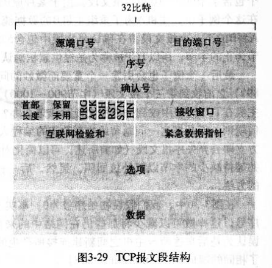

1. TCP报文段说明：
1.1 TCP报文段一般长度为20字节，“选项”部分用一般不用。
重要部分：序号和确认号用于保证数据的可靠传输
标识字段：ACK，SYN，FIN，RST用于TCP连接的建立和关闭
校验和用于确定报文段的有效性
1.2. TCP通过“累计确认”机制来反馈数据的接收情况。如响应中的ACK为100，标识已经正确接收了序号为100之前的所有数据。而对于到达接收端的失序数据怎么处理，TCP中未做详细规定。实现TCP的人员可以采用的方案是：1）直接丢弃收到的失序数据，对接收端的设计比较简单；2）在接收端保存那些先到达的失序数据，这样可以减少网络带宽的浪费。实践中采用方法2比较多些。
1.3. TCP的确认报文一般可以通过“捎带”的形式反馈，如在报文段中加入数据的同时添加ACK标识和确认号信息。当没有数据传输时，仅设置确认相关的字段即可，作为ACK报文发送。
1.4冗余ACK
1）发送方收到冗余ACK时，会进行“快速重传”，不会等到超时时间到期后才重传丢失的分组。因为超时时间可能经过多次丢包后会变得很长，如果在定时器过期后再重传分组，会使接收方感受到很大的延迟。
2）延迟ACK：如果已经对某分组确认过了，但是等待了500ms还没有期望的下一个分组到达，那么就再发从一遍对上一个分组的ACK报文
这些信息可以用于解释TCP连接建立过程出现丢包如果处理。
（TCP套接字编程一般支持我们设置超时连接时间...使应用层根据TCP层的情况作出合适的动作，而不至于使TCP层不断的重传丢失分组
个人猜测：针对TCP连接的管理，实现时应该有特殊的处理，参考TCP连接的状态变迁图，在不同的状态，他们可能会做特殊的处理，强势更改当前的TCP传输操作。）
（问题：如果报文已经发送出去了，但是未确认。而此报文又因为某种原因一直不能得到确认，就像TCP连接不能指定的IP或者端口不可达似的，怎么中断报文重传呢？
a. 端口不可达：当服务器收到指向不可达端口时，服务器会发送一个RST标示位置1的报文给客户端，告诉他此端口不可达，不要再往这个端口发送数据了
b. IP不可达：网络层会处理IP不可达，具体细节不清楚了..）
2. 接收窗口的作用--流量控制
2.1 流量控制是什么：
TCP连接的两端都会为此连接准备缓存，应用层的数据时先到到发送方的缓存的，然后TCP工具从缓存中取出MSS个字节生成报文向网络层传送，相应的在接受层，报文段也是先到达接收端的缓存的，接收端应用程序不是在数据一到达就将报文从缓存中取出来的，因此这里就有个问题：当发送方发送的数据过快，过多，而接收端却没有及时从缓存中拿数据，就可能导致接收端的缓存溢出，造成数据丢失。
流量控制服务就是为了消除发送方使接收方缓存溢出的可能。
2.2 TCP首部中接收窗口的作用：
接收方在传递报文时，都计算一下缓存的剩余空间，此值告诉发送方。当发送方收到报文后，解析出头部“接收窗口”（rcvWind）的大小，则它只需保证发送方已发送但还未确认的数据小于此“接收窗口”，就不会是接收方的缓存溢出，如果收到rcvWind=0,则阻塞不再发送数据，起到控制流量的目的。
但是当发送端收到rcvWind=0，而接收端也没有新的报文发送给发送方，那么发送方则一直不知道rcvWind的最新大小，导致一直阻塞。为了避免这种情况，TCP规约中要求，当rcvWind=0时，A继续向接收方发送数据为1字节的报文，那么总会收到接收方的确认报文的。
3. 回退N步Go-Back N
又称“滑动窗口协议”，它可以解决流水线传输数据协议中的差错问题。
发送方要保证那些已发送但未确认的分组个数<N。如果发送超时事件，重传窗口中那些未确认的分组即可。
1）超时：发送方使用一个定时器，它可以被当做最早的发送未确认分组的时钟，而后也可以发送其他分组，当收到一个确认时，如果还有未确认的分组，则重启此时钟。当定时期间未收到最早那个报文的ACK，则认为发生了超时事件，重传那些窗口内未确认的分组。
2）接收方丢弃所有失序的分组，此法的优点就是接收方实现简单，不需要缓存失序分组。缺点是可能导致很多的重传事件发生
GBN采用的技术有：序号，累计确认，超时重传，检验和。
4. 选择重传
关键点是：接收方可以缓存收到的失序报文，发送方仅发送那些它感觉丢失的报文段，不需要重传窗口内的所有报文
1）接收方的窗口和发送方的窗口不是一致的，且他们也不能感知对方窗口的状态；
2）发送方的每个报文都有一个定时器来确定超时事件的发生；
3）当接收方收到小于窗口基数的报文时，也应重传ACK报文，因为发送方不知道报文已经被接收方正确接收了
4）窗口的长度是序号空间的一半时才能工作，因为如果窗口过大，接收方将不能确定报文是发送方的重传还是新的报文；
5. 网络拥塞
5.1 拥塞原因与开销
1）如发送方的发包速率比较大，超过了中间设备的处理能力，那么数据包就会在中间设备缓存，导致数据包交付到接收端的时间比较长，主要原因就是在中间设备上的排队时延比较长。（可以想象下水管理论，因此网络服务提供商要升级设备，提高服务质量，避免由于中间设备的原因，导致网络拥塞）
2）中间设备的缓存也是有限的，如果发送方的速率过高，很快使中间设备缓存溢出，那么后来到的数据包就可能被中间设备丢弃，这样就会导致发送方重传数据包。还有一种情况是发送方由于大时延而重传了超时但未丢失的数据包（曾经在路由器缓存中呢），这样路由器就有可能重新转发那些不必要的分组拷贝。
3）当数据包沿着链路在网络中传输时，会由于下游的一个丢包操作，导致上游所有中间设备做的转发操作都是无用功。